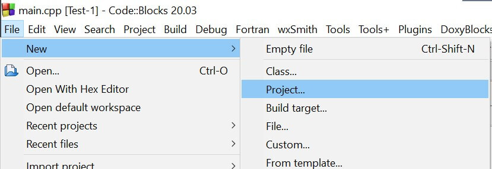
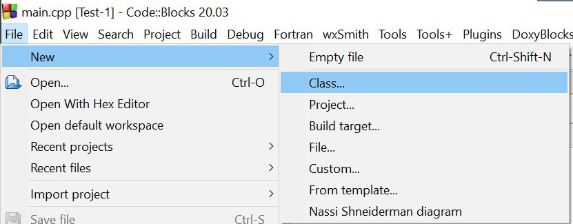
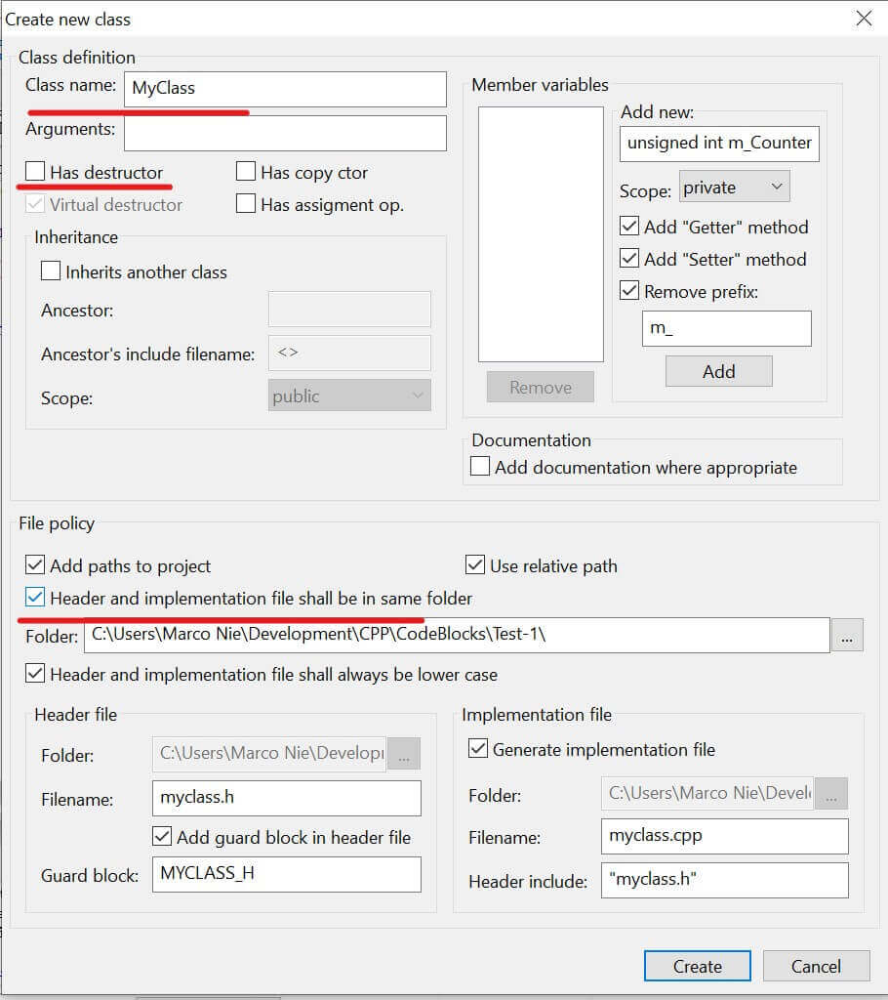
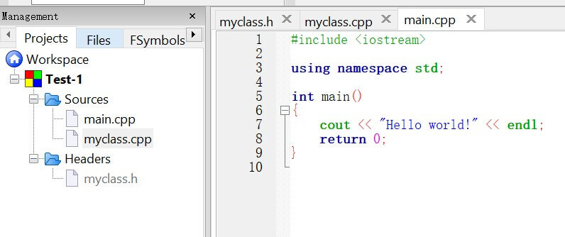
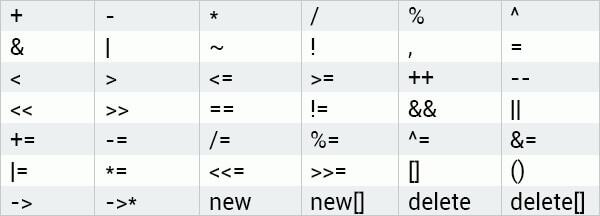

这篇文章上次修改于 441 天前，可能其部分内容已经发生变化，如有疑问可询问作者。
下面我们通过实际应用来介绍如果在真实环境下应用。
我们使用 Code::Blocks IDE 来进行调试。这是一个免费的 c++ 开发环境，能够应用于绝大多数使用场景。
在下载界面下载对应系统版本的安装包：http://www.codeblocks.org/downloads/26
最好安装带编译器的版本，这样就可以直接使用。
新建项目
安装好 codeblock 后新建一个项目：

选择 console application：
根据提示设置项目名称等，完成项目建立。
然后添加一个 class：

设置 class 名称，取消勾选 has destructor，勾选 headers and implementation file shall be in same folder：

完成后项目结构如下：

- main.cpp 项目主文件
- MyClass.cpp class source 源文件
- MyClass.h class header 头文件
头文件和源文件
头文件 .h 申明了 class 的 function 和 variable 变量等元素，我们新建的 class 头文件内容如下：
#ifndef MYCLASS_H
#define MYCLASS_H
class MyClass
{
public:
MyClass();
protected:
private:
};
#endif // MYCLASS_H里面只默认包含了一个 constructor 构造器 MyClass()。
源文件 .cpp 包含了这个 class 具体 function 和 variable 等元素的实现过程。当前只有一个空的构造器 function：
#include "myclass.h"
MyClass::MyClass()
{
//ctor
}范围解析符：
我们注意到源文件内构造器前的两个冒号::，叫做 scope resolution operator 范围解析符。这个符号是用来表示那些已经在头文件内申明过的 function 要在这里做具体实现了。用来和头文件内定义的元素进行关联的作用。
关于::和.的使用场景我的理解是，当在定义一个元素或功能时用范围解析符::，当实例化object后使用其一个元素或功能时用点.，例如：
//定义一个元素为class内的一个att1类型：
MyClass1::att1 a;
//使用class的function：
MyClass2 obj;
obj.func();要在 main 总使用我们创建的 class，只需要在其中引用头文件名即可:
#include <iostream>
#include "myclass.h"
using namespace std;
int main()
{
MyClass obj;
return 0;
}总体来说，头文件用来定义 class 提供了哪些功能及元素，源文件用来具体实现这些功能。
destructor 销毁器
和上一章我们讲到的 constructor 构造器类似，destructor 销毁器也是一个特殊的 function，他在 object 被销毁时自动执行。
销毁一个 object 一般是在跳出创建这个 object 的 scope 段或者使用 pointer 指针指向这个 object，使用 delete 指令清除此指针指向的数据。
销毁其的写法和构造器类似，使用 class 名作为 function 名字，前面加上一个波浪符~。当然也是没有返回值类型的。例如：
class MyClass {
public:
~MyClass() {
// some code
}
};使用销毁器能够方便的实现在关闭程序时释放资源，关闭文件，释放内存等功能。
在头文件中声明一个销毁器：
class MyClass
{
public:
MyClass();
~MyClass();
};然后再源文件内定义具体实现内容：
#include "MyClass.h"
#include <iostream>
using namespace std;
MyClass::MyClass()
{
cout<<"Constructor"<<endl;
}
MyClass::~MyClass()
{
cout<<"Destructor"<<endl;
}不同于构造器，销毁器不能使用参数，也不能被重写，也就是一个 class 只能有一个销毁器。销毁器不是必须有的，不需要的话可以不写
返回我们的 main，我们已经定义了一个 object MyClass obj，编译运行程序，会在终端输出以下：
Constructor
Destructor选择符
使用选择符 -> 可以访问一个指针指向的 object 的元素。例如：
MyClass obj;
MyClass *ptr = &obj;
ptr->myPrint();我们创建了 object obj 然后定义一个指针 ptr 指向这个 object 的地址，然后我们可以使用选择符来访问 object 的元素。
object 元素访问基本原则：
- 如果直接面对 object，使用点
.来访问 object 的元素，如：obj.myPrint() - 如果使用面对指针指向的 object，使用选择符
->来访问 object 的元素，如：ptr->myPrint()
constants 常数
常数就是一个有固定值的表达式，它的只在程序运行期间不能够被改变，使用关键词const 定义一个有固定值的变量：
const int a=2;
注意所有 const 类型的变量必须在创建时给其赋值。
我们可以创建一个 const 类型的 object：
const MyClass obj;
object 内所有的 variable 变量必须在初始化时赋值，一般在 constructor 构造器内完成，实例化的时候直接给其传递数据。如果没有提供构造器完成参数初始化赋值，会引起编译器报错。
一旦一个 const 类型的 object 被创建，它内部的所有 variable 变量的值都不可以被改变了，包括直接修改 public 段的变量或者使用 function 修改 private 的变量都不可以。
只有非 const 的 object 才可以调用非 const 的 function。对于 const 的 object 不能只能调用 const 的 function，定义一个 const 的 function 只需要在后面加上关键词 const，头文件定义示例如下：
class MyClass
{
public:
void myPrint() const;
};源文件同样的方式：
#include "MyClass.h"
#include <iostream>
using namespace std;
void MyClass::myPrint() const {
cout <<"Hello"<<endl;
}然后我们就可以实例化一个 const 的 object 使用厘米俺的 const function：
int main() {
const MyClass obj;
obj.myPrint();
}
// Outputs "Hello"在一个 const object 调用常规的 function 会引起报错。同时在 const function 内尝试修改 object 内某变量数据也会报错。
元素初始化器
const 类型的元素数据不能够被改变，且必须在创建时赋值。c++ 提供了一个语法结构来给 class 内元素进行初始化叫做：constructor initializer list 构造器初始化列表。
以下示例执行会引起报错，因为在 function 中操作的元素有 const 类型的元素：
class MyClass {
public:
MyClass(int a, int b) {
regVar = a;
constVar = b;
}
private:
int regVar;
const int constVar;
};const 类型元素在申明后不能再对其修改。
这时候就需要使用 构造器初始化列表来对其初始化赋值：
class MyClass {
public:
MyClass(int a, int b)
: regVar(a), constVar(b)
{
}
private:
int regVar;
const int constVar;
};需要初始化的元素列表下载构造器后，前面使用一个冒号:，每个元素间使用逗号, 分隔。使用语法 variable(value) 来对其赋值。结尾不需要加分号;。
使用构造器初始化列表可以用来避免将需要初始化的 const 类型参数放在其 body 内处理而引起错误。
修改我们的项目文件：
MyClass.h:
#ifndef MYCLASS_H
#define MYCLASS_H
class MyClass
{
public:
MyClass(int a, int b);
~MyClass();
protected:
private:
int regVar;
const int constVar;
};
#endif // MYCLASS_HMyClass.cpp:
#include "myclass.h"
#include <iostream>
using namespace std;
MyClass::MyClass(int a, int b)
: regVar(a), constVar(b)
{
cout << regVar << endl;
cout << constVar << endl;
}
MyClass::~MyClass()
{
cout << "destructor" << endl;
}main.cpp：
#include <iostream>
#include "myclass.h"
using namespace std;
int main()
{
MyClass obj(42, 33);
return 0;
}输出结果为：
42
33
destructor注意构造器初始化列表也可以应用于常规变量，但是必须应用于 const 变量。
结构化
在真实世界中一个 object 可能是很复杂的，由很多其他简单的 objects 构成。例如一辆汽车的组成部分有车身，发动机，轮胎等。这一组合过程叫做结构化。
在 c++ 中，一个 class 可能作为另一个 class 的元素。下面的例子中我们构建两个 class：Person 和 birthday，且 Person 中包含 Birthday 作为一个元素。
birthday.h:
#ifndef BIRTHDAY_H
#define BIRTHDAY_H
class Birthday
{
public:
Birthday(int m, int d, int y);
void printDate();
protected:
private:
int month;
int day;
int year;
};
#endif // BIRTHDAY_Hbirthday.cpp: 注意将 function 返回类型放在范围解析符前
#include "birthday.h"
#include <iostream>
using namespace std;
Birthday::Birthday(int m, int d, int y)
: month(m), day(d), year(y)
{
}
void Birthday::printDate()
{
cout << month << "/" << day << "/" << year << endl;
}persion.h:
#ifndef PERSON_H
#define PERSON_H
#include "birthday.h"
#include <string>
using namespace std;
class Person
{
public:
Person(string n, Birthday b);
void printInfo();
protected:
private:
string name;
Birthday bd;
};
#endif // PERSON_Hpersion.cpp:
#include "person.h"
#include <iostream>
using namespace std;
Person::Person(string n, Birthday b)
: name(n), bd(b)
{
}
void Person::printInfo()
{
cout << name << endl;
bd.printDate();
}Person 包含 name 和 Birthday 两个元素，且在构造器内对其初始化。
结构化的意义是建立一种包含关系，即 Person 中包含一个 Birthday。在 Person 中有一个 printInfo() 来输出信息，bd 是 Birthday 的实例，所以可以直接使用其 function。
在 main 中实例化测试：
#include "person.h"
#include "birthday.h"
using namespace std;
int main()
{
Birthday bd(11, 25, 1989);
Person p("Marco", bd);
p.printInfo();
return 0;
}以上示例中，我们首先创建一个 Birthday 的 object 并初始化参数，然后创建一个 Person 的 object 并初始化参数，其中第二个参数使用第一步创建的 object 作为数据，最后调用 Person object 的 function 来输出信息。
结构化的优势是保持每个 class 相对简单，专注于一个任务。同时让每个各个 object 保持独立性，和可复用性。
friend 关键词
位于 private 段的 class 里的元素默认无法被外界直接访问，但可以通过在 class 内申明一个并非 class 内部的 friend function 来实现对 private 元素的读取。
使用关键词 friend 来定义，在 MyClass 头文件中修改如下：
#ifndef MYCLASS_H
#define MYCLASS_H
class MyClass
{
public:
MyClass(int a, int b);
~MyClass();
protected:
private:
int regVar;
const int constVar;
friend void readPriv(MyClass *obj);
};
#endif // MYCLASS_H
};我们在 class 中申明一个 function，传入参数为 class 本身，注意传入的模式是 by reference 也就是传入 object 的地址。详细说明参考：C++ 入门教程 -- Functions
然后再外部定义 someFunc 的内容，我直接在 main 中定义，并测试读取 private 参数：
#include "myclass.h"
#include <iostream>
using namespace std;
void readPriv(MyClass *obj)
{
cout << obj->constVar << endl;
}
int main()
{
MyClass a(42, 33);
MyClass *b = &a;
readPriv(&a);
return 0;
}输出结果为：
33
再定义 friend function 时，传入 by reference 参数可以写成 *obj 也可以写成 &obj。只是在后续 function 内容中使用 . 还是 -> 调用内部功能。然后再调用 friend function 时是传入 object 地址还是直接传入 object 本身。
friend function 不属于任何 class。
this 关键词
每个 c++ object 都有一个指向本身的指针叫做：this。在 object 内部 function 中，可以通过使用 this 指针来引用 object 自身。
我们建立一个简单的 class：
class MyClass {
public:
MyClass(int a)
: var(a)
{ }
void printInfo() {
cout << var << endl;
cout << this->var << endl;
cout << (*this).var << endl;
}
private:
int var;
};printInfo() 中的三条指令会得到相同的结果。this 是一个指针，所以使用 -> 来读取对应地址的数据，也可以使用 *this 数据查询符来表示此地址下的数据。可以参考教程：C++ 入门教程 -- 数据类型，数组及指针
操作符复用
大多数 c++ 中的操作符都可以被重新定义。因此让我们自定义的数据类型进行运算操作，比如将两个 object + 加起来。
以下列表中的操作符可以被复用：

不能被复用的符号有：: | .* | . | ?:
我们定义一个简单的 class：
class MyClass {
public:
int var;
MyClass(int a)
: var(a)
{ }
};下面示例我们将重新定义加号+ 来让两个 object 可以加起来。
定义复用操作符其实是一个 function，通过关键词 operator 和操作符来定义，类似于普通 function，这里也有返回类型和传入数据项需要定义，以下示例中，我们复用加号+，然后返回值为一个此 class 本身的 object，传入数据为一个 object 地址：
class MyClass {
public:
int var;
MyClass(int a)
: var(a) { }
MyClass operator+(MyClass &obj) {
MyClass res;
res.var = this->var+obj.var;
return res;
}
};再复用操作符 function 中，我们定义了一个 新的 object，然后使用 this 调用此 object 本身的参数 var 和传入 object 的 var 相加，结果放入新建立的 object 的 var 内，最后返回这个新 object。
这样定义后，我们就可以直接使用操作符来做运算了：
int main() {
MyClass obj1(12), obj2(55);
MyClass res = obj1 + obj2;
cout << res.var;
}
//Outputs 67以上就是 class 的基本使用方法。
没有评论